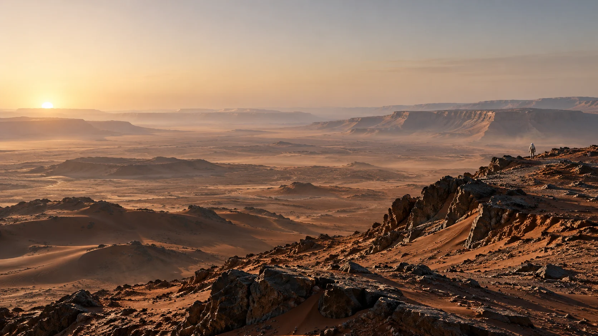
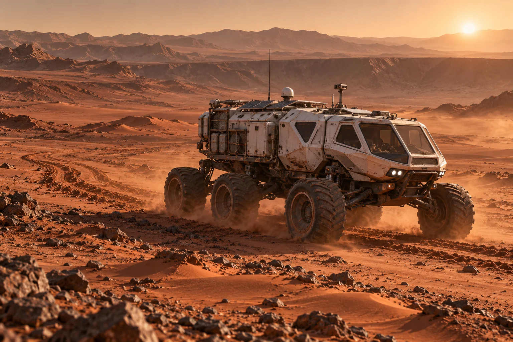
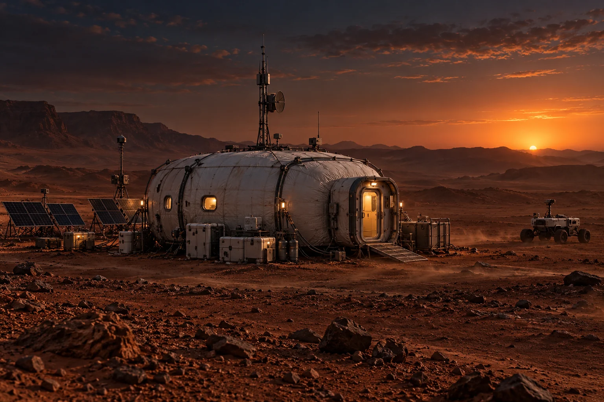

01 / THE LANDSCAPE
Silence, all the way to the horizon.
Mars is the largest character in the story: beautiful, indifferent and always beyond the window.

Follow the mission from the first landing to the final ascent—one Martian day at a time.
Drag the mission clock. The nearest recorded milestone opens automatically.
A schematic mission map. Select a waypoint to inspect the route, then use “follow route” to advance through the journey.
Original visual studies of the landscape, long-range rover and surface habitat.
Mars is the largest character in the story: beautiful, indifferent and always beyond the window.

Cabin, power system and lifeline. For the final crossing, every spare kilogram has a purpose.

Laboratory, greenhouse, shelter and workshop—the Hab turns survival into a daily engineering problem.
Select a system to inspect how the outpost supports one stranded crew member.